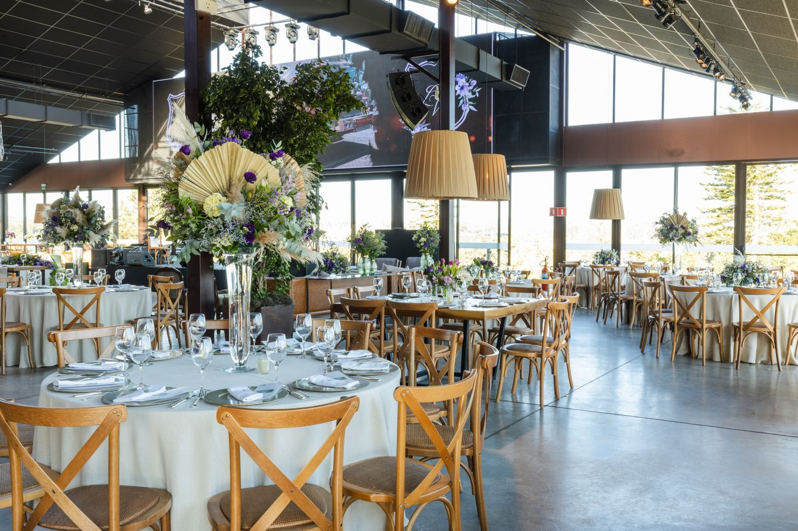

Меню на каждый день
Салаты, супы, горячее, гарниры и выпечка — меню на неделю, можно собрать комплексный обед. По тексту сайта — «от 120 рублей», актуальность уточняется.
Меню дня с ценами, корзина обедов с доставкой в офис и расчёт банкета на ваше число гостей — всё на одной странице.

Фото — иллюстрация (Pexels), не зал «Весты»
На телефоне сайт не адаптирован, вместо Flash-ролика пустое место, часов работы нет, а обеды и банкет заказываются только звонком или письмом.
Меню дня с ценами и корзина обедов в офис; расчёт банкета «гости × от 2 300 ₽» и подбор зала по числу гостей.
Проверяет минимальный заказ 1 000 ₽ и приём заказа до 16:00 накануне, считает скидку за раннее бронирование и отправляет заявку в Telegram.
✦Это концепт. С вашими фото и правками будет ещё лучше
Условия — со страницы «Доставка обедов» на текущем сайте. Меню на неделю публикуется там же файлом Excel.
Салаты, супы, горячее, гарниры и выпечка — меню на неделю, можно собрать комплексный обед. По тексту сайта — «от 120 рублей», актуальность уточняется.
Заказ принимается до 16:00 предыдущего дня. В комплекте — одноразовые контейнеры, приборы и салфетки.
Минимальная сумма заказа — 1 000 ₽; при заказе больше 1 000 ₽ доставка — за счёт кафе.
Свадьбы, юбилеи, корпоративы, поминальные обеды. Данные — с текущего сайта.
Отдельный вход для ваших гостей, удобная парковка, мероприятие в удобное время.
от 2 300 ₽ на гостяДля небольших праздников: сервировка и оформление, как в большом зале.
от 2 300 ₽ на гостяВыездные мероприятия под ключ, доставка и обслуживание фуршетов в офисе.
цена уточняетсяЦитаты — дословно с Яндекс Карт, без имён.
«Недорого, вкусно готовят повара, быстрые и обходительный персонал. Можно обратиться по любому поводу, будь торжество или печальное событие.»Отзыв с Яндекс Карт
«Очень понравилось кафе. Отмечали юбилей, места много, просторно. Всё было очень вкусно, обслуживание очень хорошее…»Отзыв с Яндекс Карт
«Можно вкусно пообедать, есть выбор первых и вторых блюд, салатов и выпечки. Цены приемлемые.»Отзыв с Яндекс Карт
Сейчас владелец ответил на 1 отзыв из 33. В рабочей версии отзывы можно подтягивать с Яндекс Карт.
Меню дня — из файла меню на неделю с текущего сайта. Банкет считается по цене «от 2 300 ₽ на гостя»; свободные даты залов уточняются.
Почта: vesta-nsk@mail.ru. Наличный и безналичный расчёт, бесплатный Wi-Fi, с 16:00 в столовой — скидка 50%. Часы работы уточняются.